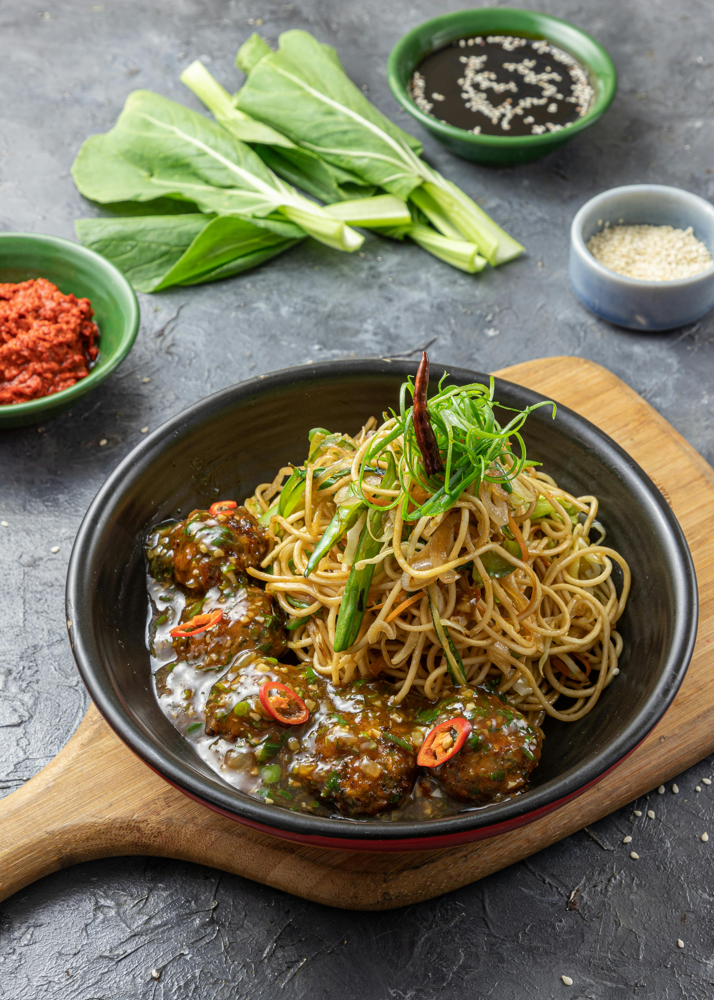

The cuisine of India is one of the world's most diverse cuisines, characterized by its sophisticated and subtle use of the many spices, vegetables, grains and fruits grown across India. The cuisine of each geographical region includes a wide assortment of dishes and cooking techniques reflecting the varied demographics of the ethnically diverse Indian subcontinent. India's religious beliefs and culture have played an influential role in the evolution of its cuisine. Vegetarianism is widely practiced in many Hindu, Buddhist and Jain communities.

Chinese cuisine is one of the oldest and most diverse cuisines in the world. Two thousand years before the beginning of our era, people there ate noodles. Even today each province – there are twenty-three in total – has its own cooking style, based on regional ingredients and preferences. These range from wildly picked greens in the mountains and fresh, salty seafood on the northeast coast to the light, sweet accents of Cantonese cuisine. In Central China, where chilli peppers are rampant, people love hot spicy food, while in Beijing, lamb is a favourite.
Want a meal that’s hearty, satisfying and delightful too? Here’s it – mashed
spiced
vegetables; served with
a side of cotton-like soft, buttery dinner rolls, crunchy onions, herby fresh coriander and tangy
lemon.
To
sum up, the Pav Bhaji – a famous street food from the ‘city of dreams,’ Mumbai. This Pav Bhaji
Recipe is
going to be create fireworks on your palate!
Flaky and crunchy fried Samosas are one of the most popular street food snack in North Indian
cuisine.
They
feature a pastry-like crust but are filled with savory and spiced potato and green peas for a
hearty,
delicious snack. This step-by-step recipe guide will help you to make the flakiest, tastiest,
absolutely
best Punjabi Samosa or Aloo Samosa from scratch!